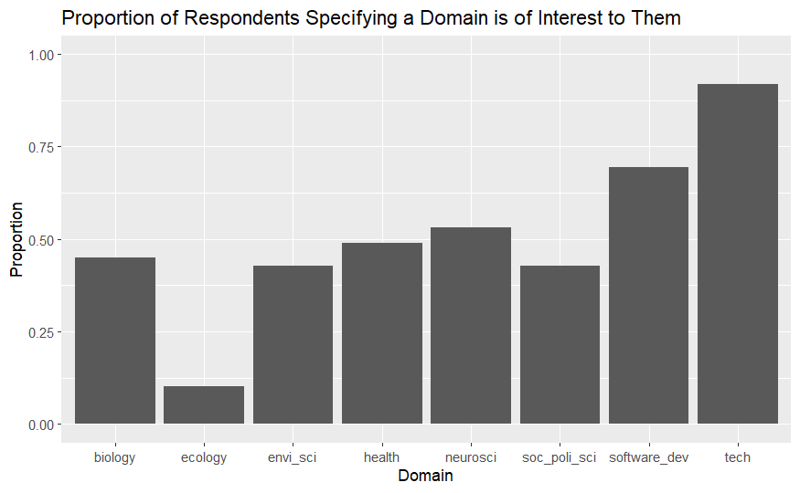
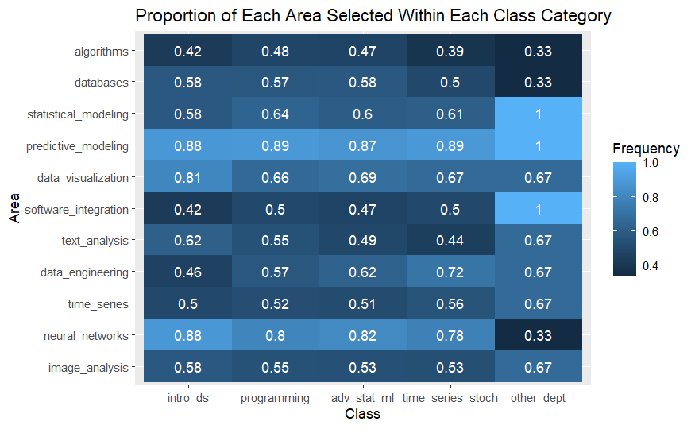
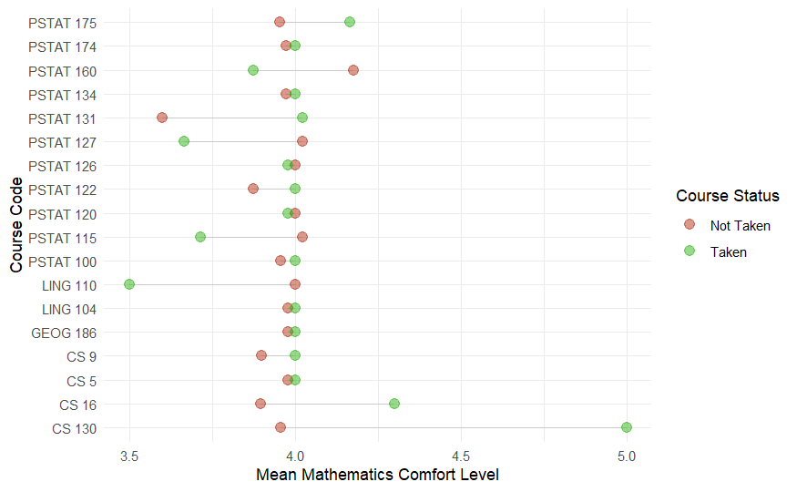
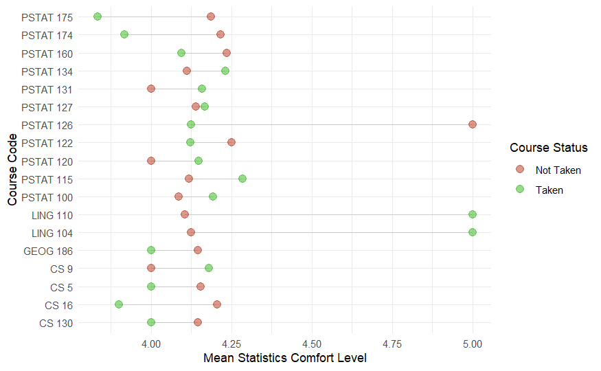
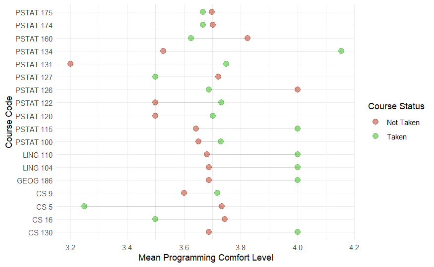
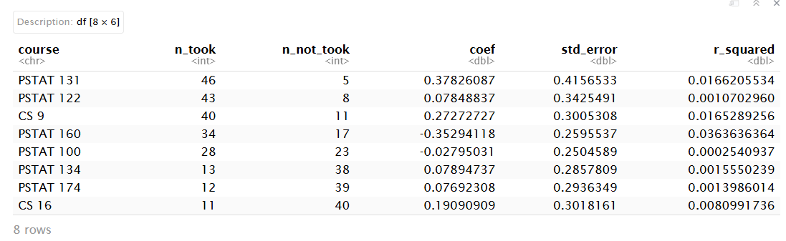
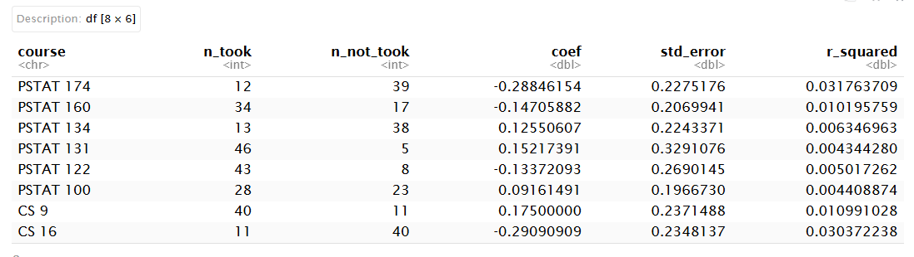
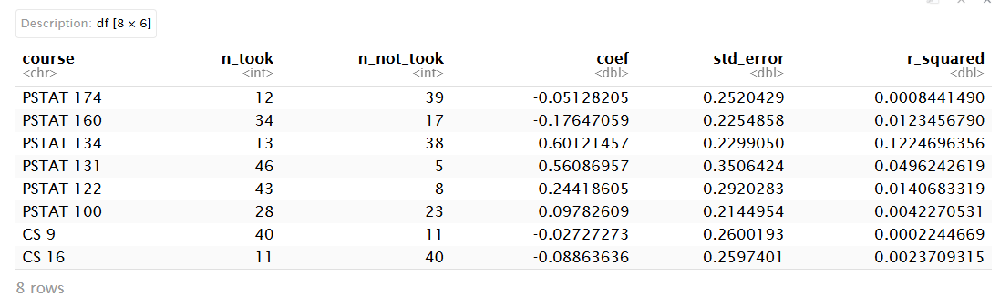

add_class_groups <- function(data){
data %>% mutate(prereq_core = str_count(courses, "PSTAT 120|PSTAT 122|PSTAT 126"),
intro_ds = str_count(courses, "PSTAT 100"),
programming = str_count(courses, "CS 5|CS 9|CS 16|CS 130"),
adv_stat_ml = str_count(courses, "PSTAT 115|PSTAT 127|PSTAT 131|PSTAT 134"),
time_series_stoch = str_count(courses, "PSTAT 160|PSTAT 174|PSTAT 175"),
other_dept = str_count(courses, "LING 104|LING 110|GEOG 186")
)
}Analysis of Class Surveys
Team 2
Executive summary
In this module, we created heatmaps to visualize patterns in interest across areas of data science by domains of interest. We found many interesting results such as, that those interested in neuroscience, biology and health were more interested in image analysis compared to those not interested in those fields. Next, we created a heatmap to visualize patterns in interest across areas of data science by classes taken and conducted Fisher’s exact test for each class/area pair. While interests were high across all data science areas, none of the differences between class-taken and non-taken groups remained statistically significant after Benjamini-Hochberg adjustment. Finally, we created dot plots to see general comfort with math/statistics/programming across different classes taken and performed a linear regression for each class. We found that certain classes were more meaningful to analyze over others, but overall, courses had no clear association with comfort in math, statistics, nor programming.
Data description
Our dataset was obtained as an intake form given to all students in the Data Science Capstone course for the 2026-2027 year.
Questions included demographic information such as major, class standing, gender identity, and race, and skills and experience information including self-perceived proficiency and comfort level with math, statistics, and programming, and major classes taken so far. The data for these questions can be found in background_clean.csv.
Finally, project preferences questions included industry or research project preference, programming language preference, domain interests (environmental science, biology, technology, etc.), and area of data science interests (image analysis, time series, predictive modeling, databases, etc.). The data for these questions can be found in interests_clean.csv.
Questions of interest
We sought to investigate the relationship between domains of interest, areas of data science preferences, courses, and self-assessed comfort level with technical skills among PSTAT197A students. Our analysis addressed three questions:
- Do domains of interest (biology, technology, AI, etc.) have any relations with preferences for certain areas of data science?
- Does previous classwork have a relation to preferences for certain areas of data science?
- Does corresponding classwork increase comfort with math/statistics/programming?
Findings
Question 1:
Do domains of interest (biology, technology, AI, etc.) have any relations with preferences for certain areas of data science?



Some of the notable results included:
Respondents who expressed interest in biology didn’t express as much interest in statistical modeling when compared to respondents who were not interested in biology (45% interest vs 77% interest).
Those who chose social/political science and health did seem to select predictive and statistical modeling at a higher rate than their counterparts who were not interested in those fields.
Those who chose biology, neuroscience, software development and technology are slightly more interested in neural networks than those who were not interested in those fields. An explanation for this is that those fields may be better-suited to utilize neural networks.
Those who chose biology and neuroscience also are interested in image analysis at a much higher rate than their counterparts not interested in biology or neuroscience. (~70% interest vs ~30-40% interest). A similar relation was seen for text analysis too.
Question 2:
Does previous classwork people have taken have a relation to preferences for certain areas of data science?
This code separates each of the major classes into different categories and counts how many classes taken in each category.

This shows a heatmap of the proportion of the areas of data science within each of the categories of classes taken. We can see that interests are high across all areas of data science.
- After Benjamini-Hochberg adjustment the smallest p-value is 0.17, showing that none of the differences between class-taken and non-taken groups remained statistically significant after the adjustment.
Question 3:
Does corresponding classwork increase comfort with math/statistics/programming?

Comfort in math comparing those who took a course and those who did not.

Comfort in statistics comparing those who took a course and those who did not.

Comfort in programming comparing those who took a course and those who did not.

Linear regression on math comfort level across “PSTAT 131”, “PSTAT 122”, “CS 9”, “PSTAT 160”, “PSTAT 100”, “PSTAT 134”, “PSTAT 174”, “CS 16”. The estimated differences in mean comfort between class-takers and non-takers were very small and had standard errors and R^2 that were insignificant. Overall, we can not say that taking any of these courses is related to higher or lower statistics comfort.

Linear regression on statistics comfort level across “PSTAT 131”, “PSTAT 122”, “CS 9”, “PSTAT 160”, “PSTAT 100”, “PSTAT 134”, “PSTAT 174”, “CS 16”. The estimated differences in mean comfort between class-takers and non-takers were very small and had standard errors and R^2 that were insignificant. Overall, we can not say that taking any of these courses is related to higher or lower statistics comfort.

Linear regression on programming comfort level “PSTAT 131”, “PSTAT 122”, “CS 9”, “PSTAT 160”, “PSTAT 100”, “PSTAT 134”, “PSTAT 174”, “CS 16”. The estimated differences in mean comfort between class-takers and non-takers were very small and had standard errors and R^2 that were insignificant. Overall, we can not say that taking any of these courses is related to higher or lower programming comfort.